Any feedback is welcome!
Figure 1. Participant's page on the T3 Website
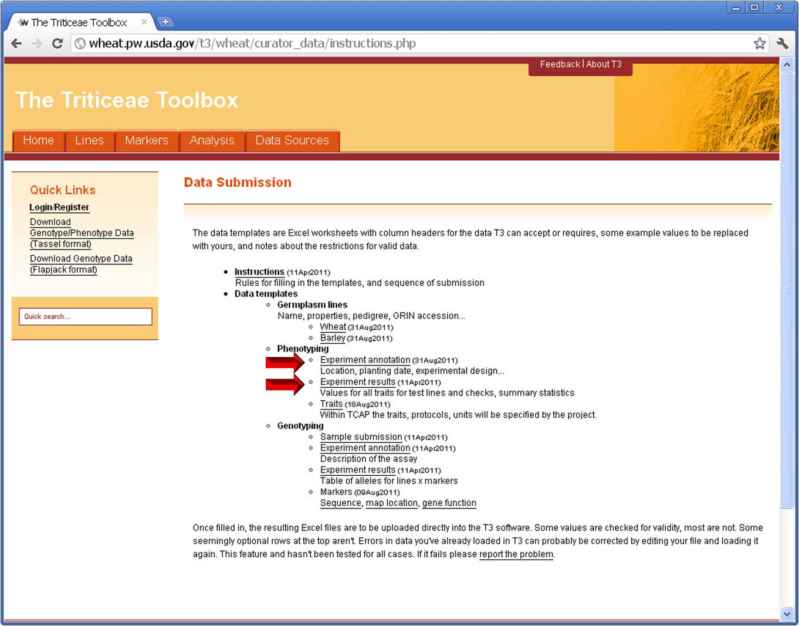
Save and Open the Phenotype Annotation Form (Figure 2) and Phenotype Data Form (Figure 3).
Figure 2. Phenotype Experiment Annotation Form
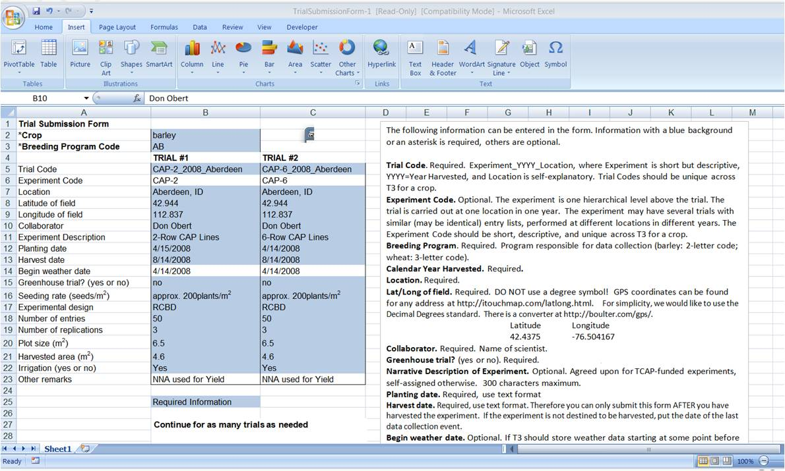
Figure 3. Phenotype Data Form
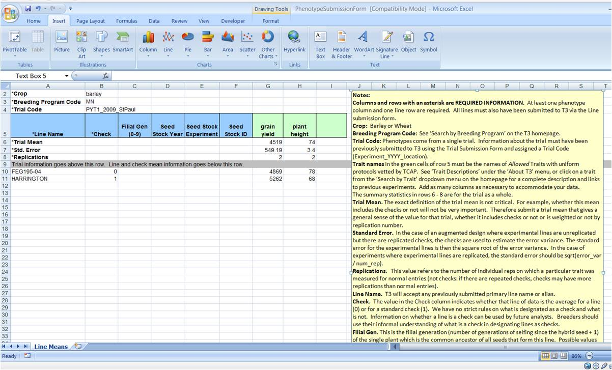
Highlighted cells are required. Breeding program codes, two-letter (barley) or three-letter (wheat) acronyms can be found on the dropdown menu on the T3 homepage on the 'Search by Breeding Program' menu.
The note box on the template spreadsheet details the information required and the preferred format.
More than one trial can be detailed on one form as long as the names are unique.
Figure 4. Completed Phenotype Experiment Annotation Form
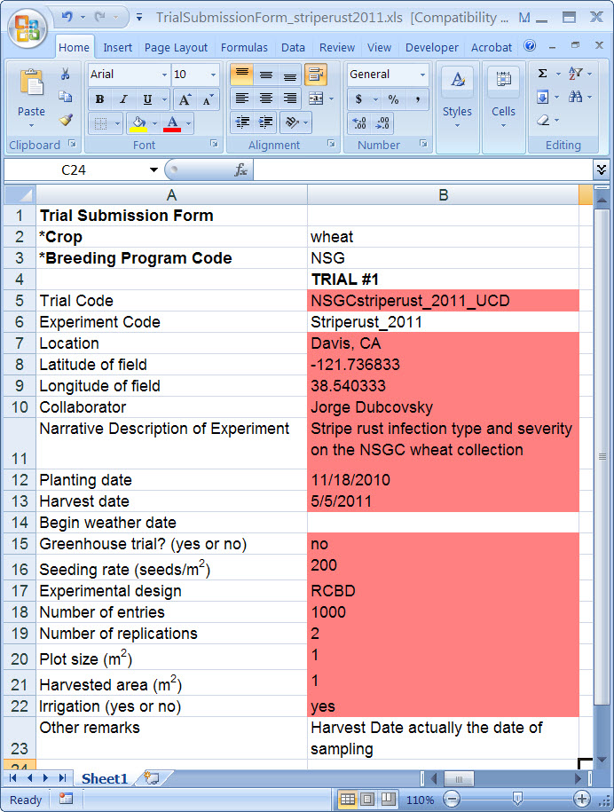
Figure 5 is an example of a spreadsheet containing raw phenotype experiment data for a 2011 stripe rust evaluation on the NSGC wheat core collection in Davis, CA.
A raw data file can be uploaded onto T3 at the same time the means file is loaded.
Figure 5. Raw phenotype data for a 2011 evaluation for stripe rust in Davis, CA.
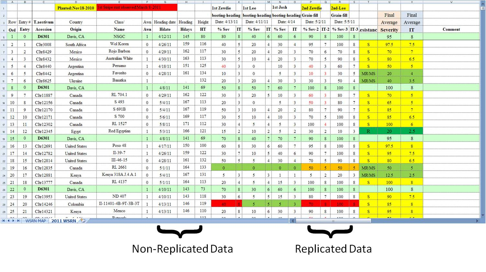
Figure 6 is a screenshot of the upper part of the completed Phenotype Data Form.
Means for each line are reported for replicated data.
For traits measured under an augmented field design regimen, report the adjusted trait values.
As of April 2012, T3 is only requiring the Standard Error summary statistic.
Figure 6. Phenotype Data File for a 2011 evaluation for stripe rust in Davis, CA.
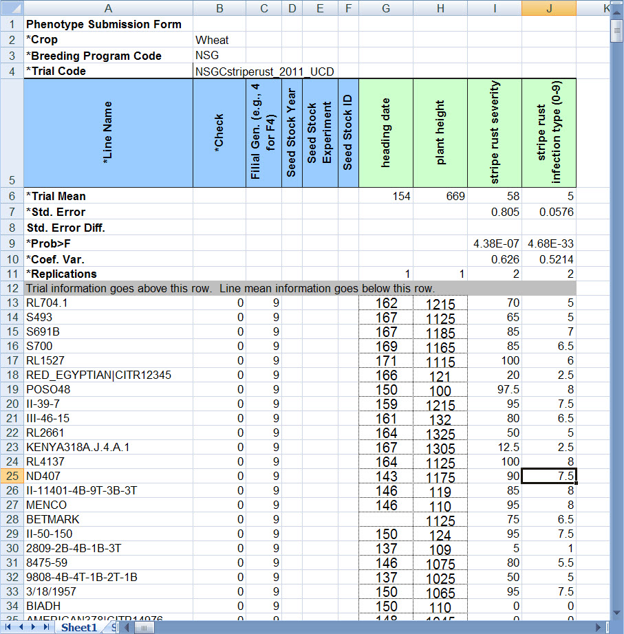
Log on as a Curator/User and find the phenotype selections on the Curation dropdown menu.
Select 'Add Phenotype Experiment Annotations' from the dropdown menu.
From the next Web page (Figure 8) tell T3 if you are going to load a
.txt or .xls file, and click 'Browse' to select the file to load on the
following page.
Figure 7. Dropdown Curation Menu on T3
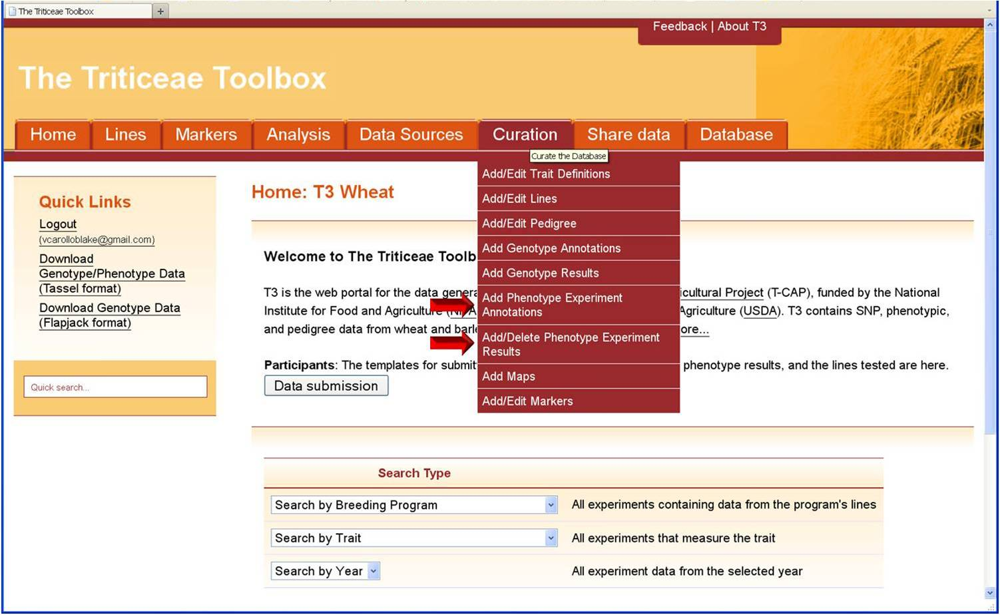
Figure 8. File selection pages.
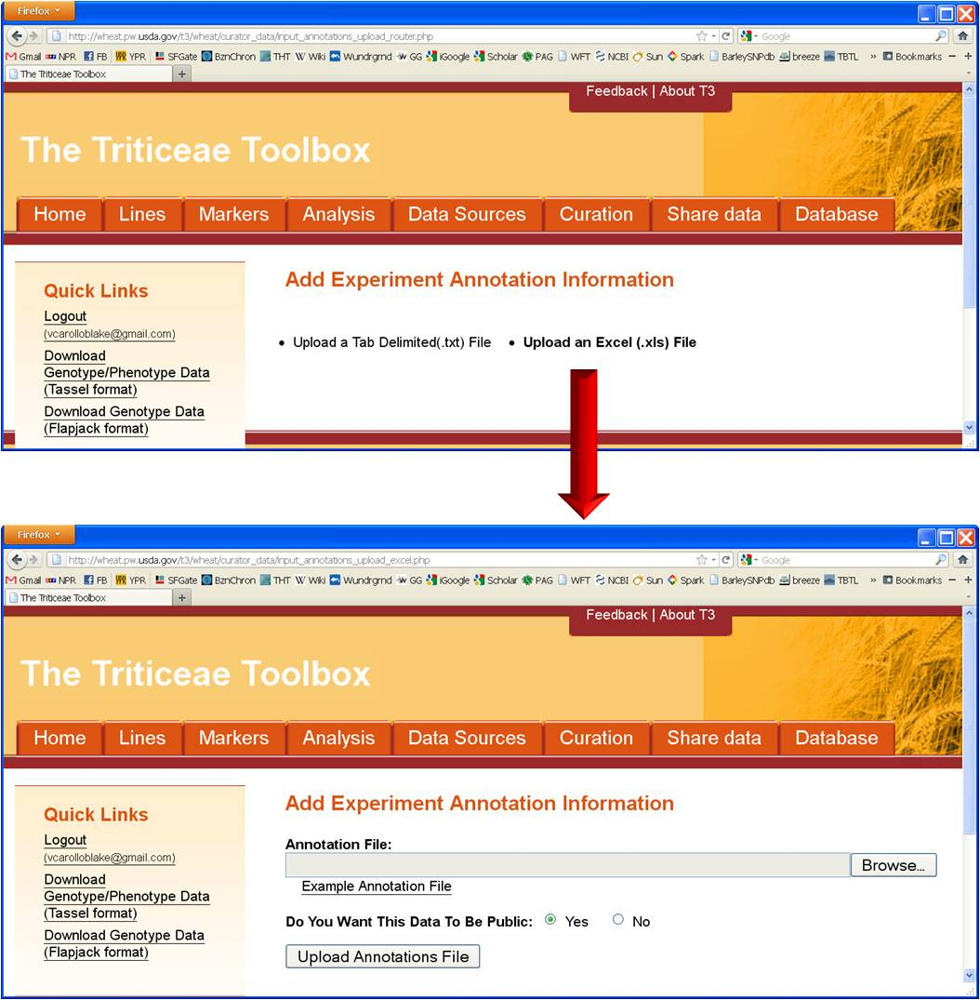
If the data is properly loaded, a validation table will be created for the submitter to review.
Clicking Accept will load the data as it appears on the validation table onto T3.
On Figure 9, the 'Update Record' text in red on the left column of the table tells the data submitter that the record already exists in T3.
Figure 9. Data Validation Page
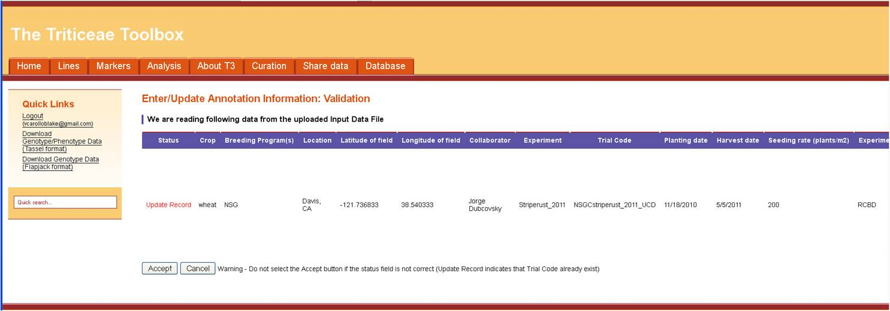
If the experiment annotation data is loaded onto the database with no internal software errors, a message is generated to assure the user.
Figure 10. Successful Upload Message
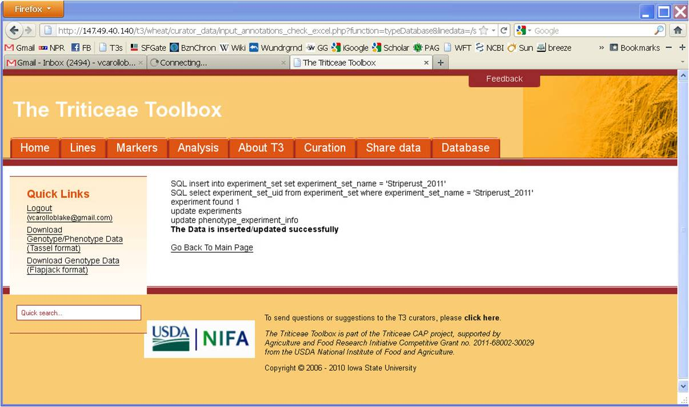
Next, upload the results data. Select 'Add Phenotype Experiment Results' from the Curation dropdown menu (see Fig. 7).
Select the data input method, i.e. Excel or tab-delimited text (Figure 11).
Next, select the means file (i.e. Phenotype Data Form, Figure 3) and raw data file to upload. (Figure 12)
Note that the raw data is archived without further processing exactly as submitted.
Figure 11.
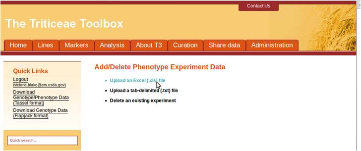
Figure 12.
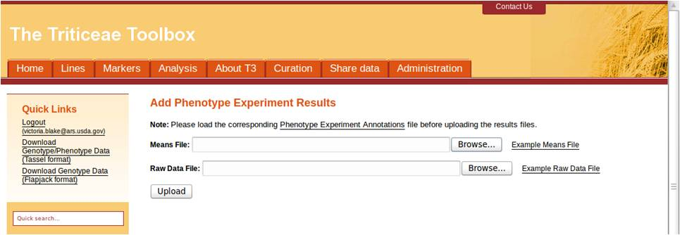
If the data is readable by T3, you will see a table reporting the summary statistics and data similar to the one shown in Figure 13.
Double check your data, and if you find no errors, click 'Accept'.
Figure 13.
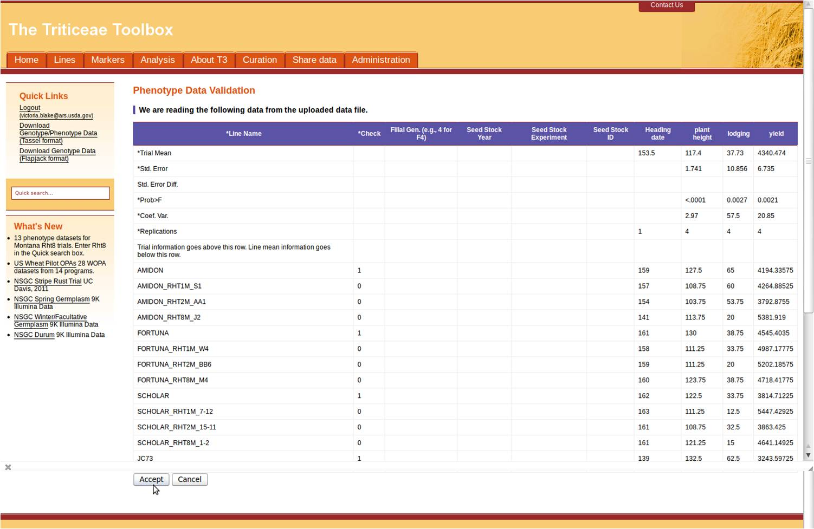
Figure 14. A successful phenotype data upload!
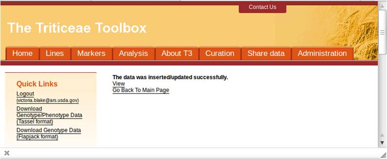